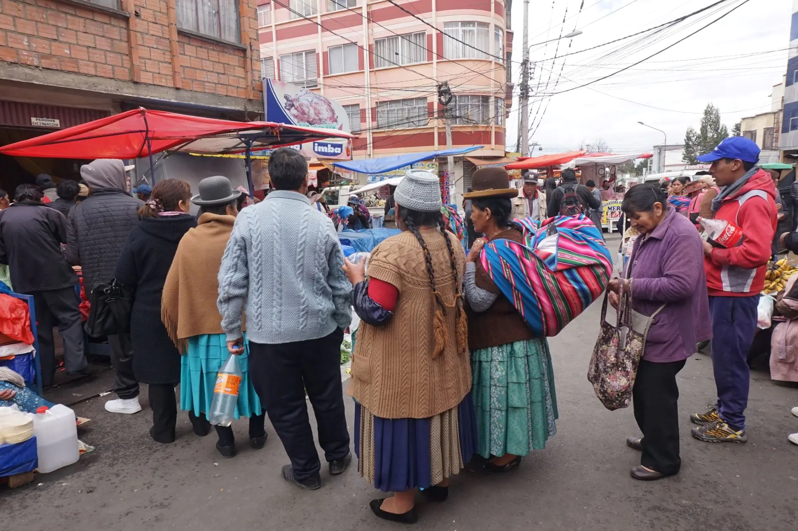

Simulador de Precios de Alimentos
Compara los precios anteriores y actuales de los productos de la canasta básica familiar. Calcula cuánto más gasta una familia cada semana y cada mes por el alza de precios durante la crisis.

Situación del Escenario
El bloqueo de rutas y el paro general han interrumpido el abastecimiento de alimentos a La Paz. Los mercados reportan escasez de productos básicos como arroz, papa, aceite y harina, generando aumentos de precio de entre el 30% y el 60% en cuestión de días.
Este simulador permite a una familia o comunidad calcular el impacto económico real del alza de precios. Se ingresan los productos que se consumen normalmente y el sistema calcula la diferencia de gasto.
Puedes agregar tantos productos como desees. Los cálculos se actualizan al presionar "Calcular Impacto".
Simulador de Precios
Paso 1 Agregar Productos a la Lista
Paso 2 Lista de Productos 0
Aún no hay productos. Agrega productos en el Paso 1.
Resultados del Impacto en Precios
Datos de Prueba para Verificar
Aplica los datos del caso de estudio para comprobar que los cálculos son correctos con ejemplos reales de la crisis.
Caso de Estudio — Canasta Básica La Paz 2026
| Producto | Precio anterior | Precio actual | Cantidad/mes |
|---|---|---|---|
| Arroz (kg) | 8 Bs | 11 Bs | 10 u |
| Papa (kg) | 7 Bs | 10 Bs | 8 u |
| Aceite (lt) | 12 Bs | 18 Bs | 4 u |
Resultado esperado: Gasto anterior total: 190 Bs. Gasto actual: 254 Bs. La familia gasta 64 Bs más al mes (+33.7%).
Caso de Estudio 2 — Canasta Ampliada (6 productos)
| Producto | Precio anterior | Precio actual | Cantidad/mes |
|---|---|---|---|
| Arroz (kg) | 8 Bs | 11 Bs | 10 u |
| Papa (kg) | 7 Bs | 10 Bs | 8 u |
| Aceite (lt) | 12 Bs | 18 Bs | 4 u |
| Azúcar (kg) | 5 Bs | 8 Bs | 5 u |
| Harina (kg) | 6 Bs | 9 Bs | 6 u |
| Leche (lt) | 7 Bs | 10 Bs | 15 u |
Resultado esperado: Gasto anterior: ~348 Bs. Gasto actual: ~506 Bs. Diferencia: +158 Bs/mes (+45.4%).
¿Qué nos enseña este modelo?
El modelo matemático demuestra que un aumento aparentemente pequeño en el precio de los alimentos básicos puede representar una pérdida significativa del poder adquisitivo para las familias de menores ingresos.
El Aumento es Acumulativo
Un alza de 3 Bs por producto puede significar más de 60 Bs extra al mes cuando se suman varios productos.
El % Engaña
Un aumento del 37% en el arroz suena abstracto, pero traducido en Bs mensuales se vuelve concreto y preocupante.
Las Familias Ajustan
Para mantener el gasto, las familias reducen cantidades o eliminan productos, bajando su calidad nutricional.
Los Datos Informan Decisiones
Conocer el impacto real permite priorizar qué comprar primero cuando el presupuesto es limitado.